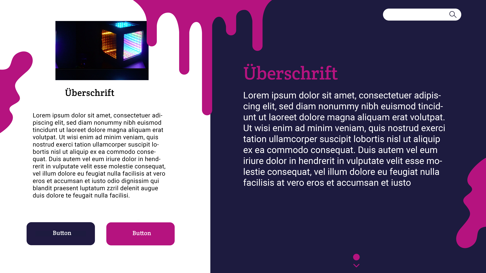
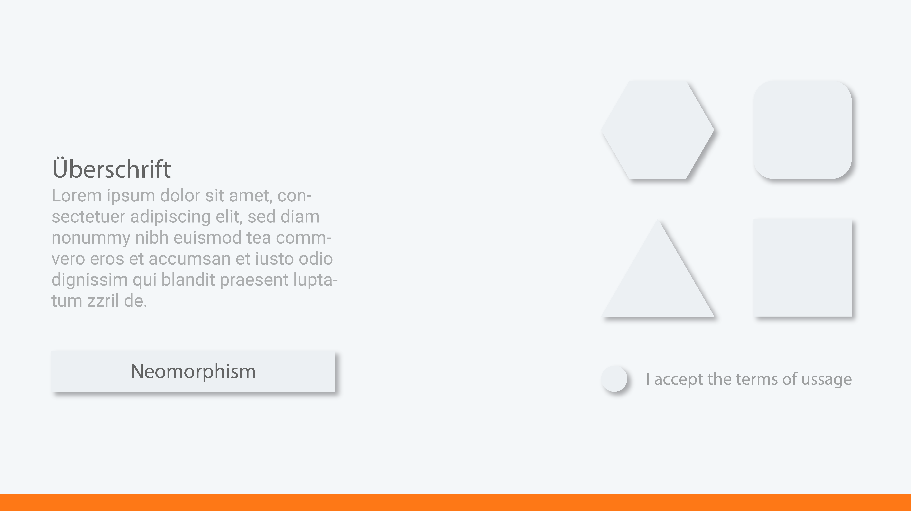

Dokumentation
Hannah Hüttmann, 670691, hahu4398
Yannick Pfeiffer, 680174, yapf6408
Idee
Im Rahmen der Hausarbeit des Moduls Frontend Design entwickeln wir eine Website für den Rundgang der
Hochschule, die im Modul Grundlagen Gestaltung konzipiert wurde.
Die Website präsentiert die an der Hochschule durchgeführten Projekte und informiert über die
Hochschule selbst.
Ziel der Website ist, über de Rundgang und die im Verlaufe des Semesters erstellten Projekte zu
informierten. Die Hochschule bewirbt über die Website den Rundgang und nutzt sie als Aushängeschild
für
die Projekte, die man im Rahmen des Bachelor Moduls erstellen kann. Weiterhin wird den Studierenden
eine Plattform für die Präsentation ihrer Ergebnisse geboten
Grafisches Konzept
Das Design besteht aus kontrastreichen und starken Farben. Die Website soll attraktiv für eine junge
Zielgruppe, wie beispielsweise Studenten:innen, wirken.
Abschnitte werden durch einen Kontrast zwischen dunkel und hell klar getrennt, um für eine
übersichtliche
Struktur zu sorgen.
Styletiles
Bei den Styletiles haben wir drei unterschiedliche Ansätze gewählt. Mit dem ersten Styletile haben
wir
unsere ursprüngliche Idee umgesetzt. Bei den anderen haben wir andere Konzepte ausprobiert.
Erstes Styletile
Dieses Styletile setzt unser Grundkonzept um. Wir haben zwei klar getrennte Abschnitte, die durch die
unterschiedlichen Farben klar getrennt sind. Es wurden vier Hauptfarben verwendet.
Als dekoratives Element wurden „Farbklekse“ verwendet. Diese sorgen für einen verspielten Eindruck,
der
das ganze auflockert und für die junge Zielgruppe ansprechend wirkt.
Wir haben uns für dieses Styletile entschieden, da es unser Konzept am besten umsetzt und gut zum
Design
der Hochschule passt.

Zweites Styletile
Mit dem zweiten Konzept wollten wir knallige Farben mit einer schwarzen Grundstruktur kombinieren.
Großteile der Website sollen in schwarz-weiß gehalten werden, während knallige Farben das Ganze auflockern.

Drittes Styletile
Mit dem dritten Styletile wollten wir den sehr aktuellen Trend des Neomorphismus aufgreifen.
Kaum Farben und im Gegensatz zum Flatdesign Schatten, die Elemente von der Grundfläche abheben.
Das Problem beim Neomorphen Design ist die schlechte Accesability, weswegen wir uns schweren
Herzens gegen dieses Konzept entschieden haben.

Veränderungen zum ersten Entwurf
Im Vergleich zum ersten Entwurf haben wir nur geringfügige Veränderungen vorgenommen. Wir haben uns
für weniger von den Flecken entschieden, da diese zu viel Ablenkung boten und die klare Struktur
beeinflussten.
Außerdem haben wir nach Prüfung mit dem Kontrast Grid die Farbe des Rosas überarbeitet, um so für
eine bessere Lesbarkeit zu sorgen. Teile des Konzeptes wurden zudem vereinfacht, da Sie einen exzessiven
Einsatz von Javascrip vorausgesetzt hätten, was den Rahmen des Moduls gesprengt hätte.
Gestalterische Elemente
Typografie
Bei der Typografie wurden zwei unterschiedliche gewählt. Für die Überschriften haben wir eine
Serifenschrift gewählt, die Crete Round. Diese ist ähnlich zur Carganschrift, der Hochschule.
Für die Textkörper haben wir die Roboto gewählt. Diese ist serifenlos und gut lesbar.
Die Typografien stehen im Kontrast und greifen so auch das gestalterische Konzept der Kontraste
wieder
auf.
Farben
Wir nutzen vier Hauptfarben, die Lesbarkeit wurde mit dem Cotrast Grid geprüft.
Weiß wird als Farbe für den Text genutzt, da dieses auf dem dunklen Hintergrund gut lesbar ist. Das
Schwarz wird als Schriftfarbe für den hellen Hintergrund genutzt.
Für die dunklen Hintergründe, sowie Buttons, wird #1D1B35 verwendet. Im Kontrast dazu steht das Pink
(#CF197D), dieses wird für die großen Überschriften verwendet. Da das Contrast Grid die Lesbarkeit
nur
für große Schriften gewährleistet.

Layout & Raster
Beim Layout haben wir uns für ein klassisches Layout entschieden. Die Elemente werden zentral
angeordnet
und untereinander positioniert. Dieses Layout ist klar verständlich und übersichtlich.
Aufbau CSS
Beim Aufbau der CSS Datei haben wir uns an SMACCS orientiert. Layouts wurden mit l
geprefixt und einzelne Abschnitte werden zusammen behandelt. Der Aufbau war für uns gut nachvollziehbar,
da man bei der arbeit an einzelnen Abschnitten immer nur den jeweil relevanten Teil der CSS Datei brauchte.
Als einziger, komplett in einem Media Quer Abgekapselter Teil der CSS Datei steht die Mobile Navigation.
Da die Navigation nur auf kleinen Bildschirmen angezeigt wird, haben wir den kompletten Code für die Leiste
in einem Media Query abgekapselt.
Außerdemn achten wir darauf ids nur sehr bedacht einzusetzen. So benutzen wir lediglich für toggle-mobile Menü eine id statt
einer Klasse, da wir so sicherstellen können, dass wir nicht aus Versehen mehrere Toggle Buttons für das Menü einbauen. Unser
CSS Graph ist daher - von den Spikes bei toggle-mobile-menü sehr ausgeglichen!
Umsetzung Responsive Webdesign
Für das responsive Webdesign haben wir unser Layout je nach Bildschirmgröße angepasst.
Für die kleineren Bildschirme wurde die Menüleiste als Burgermenu umgesetzt. Dieses wird bei einem
Klick auf den Button ausgefahren und bei einem erneuten Klick wieder eingefahren. Zudem werden die
Elemente, z.B. die Exponate auf der Übersichtsseite, untereinander angeordnet und nicht mehr nebeneinander.
Das Menü haben wir um ein Background Image ergänzt, was dem Ganzen den Eindruck von herunterlaufender Farbe gibt.
Bei der Desktop-Variante wird das Menü als Leiste am oberen Bildschirm angesetzt. Die Elemente werden
nebeneinander angeordnet, um den Platz besser zu nutzen
Erklärung nötiger Bildrechte
Alles Beispielbilder sind von Unsplash.com. Diese können frei verwendet werden.
"License Unsplash photos are made to be used freely. Our license reflects that.
All photos can be downloaded and used for free
Commercial and non-commercial purposes
No permission needed (though attribution is appreciated!)"
Die Bilder in der Dokumentation sind ausschließlich Screenshots oder Bilder unserer Arbeit.
Die Texte zu den einzelnen Exponaten wurden von den Studierenden verfasst und im Rahmen
des Moduls Grundlagen Gestaltung freigegeben. Da wir unsicher waren wie wir hier mit den Berechtigungen umgehen sollen,
haben wir - um auf der sicheren Seite zu sein - die Texte & Projekte abschließend durch fiktive Projekte ersetzt und entsprechende fiktive Texte ergänzt.